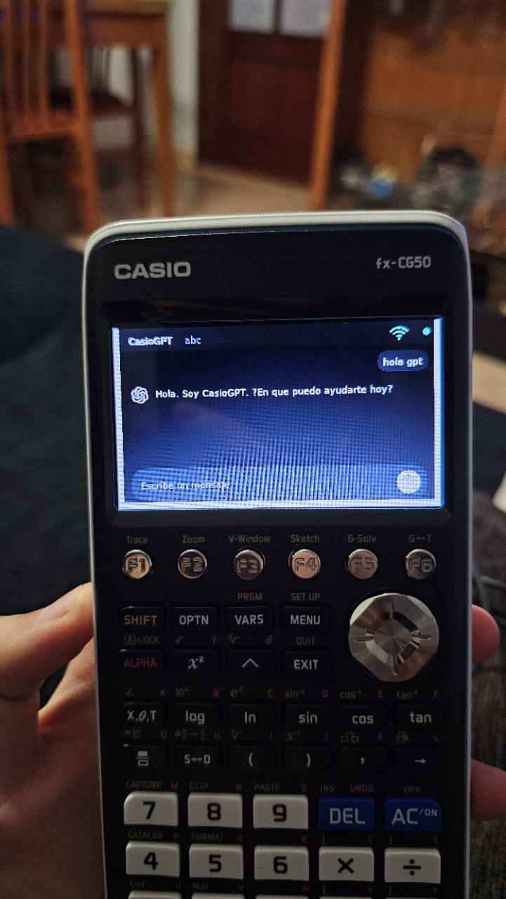
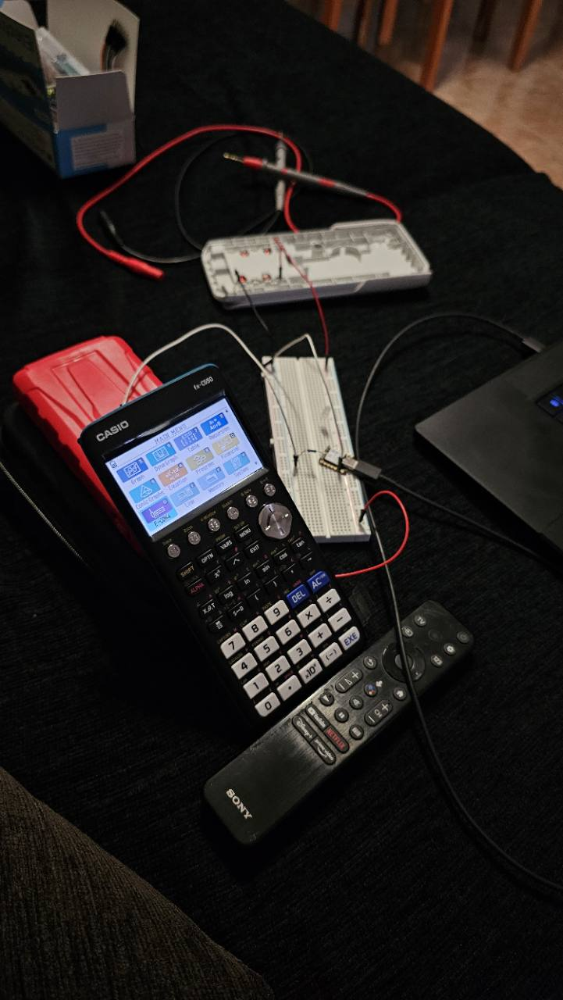
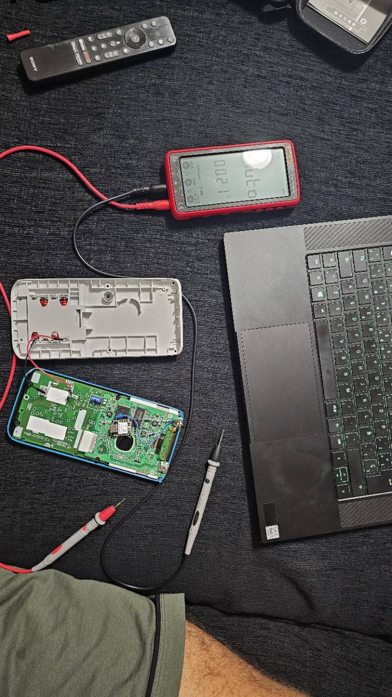
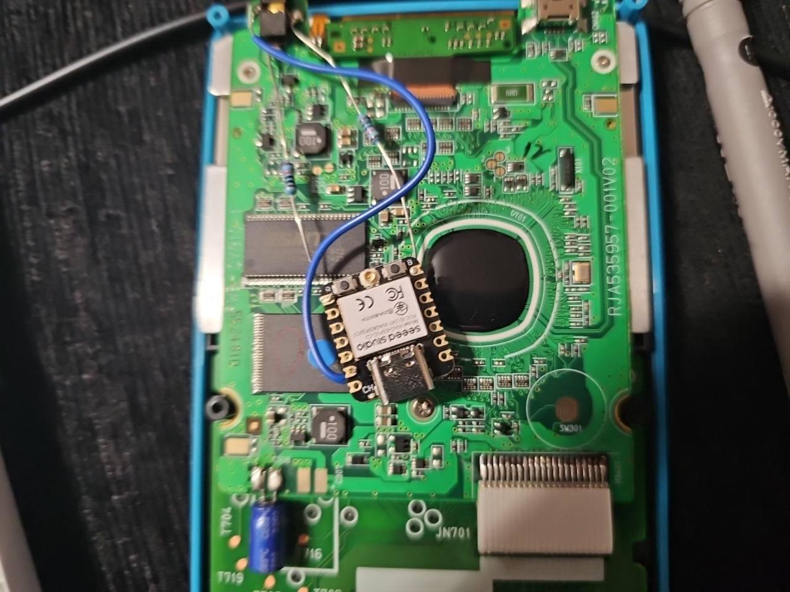
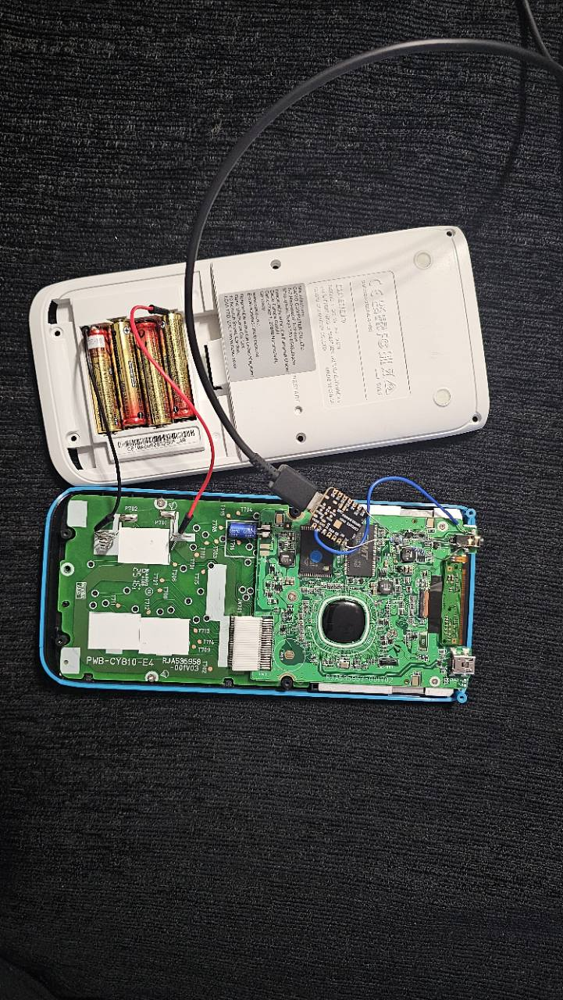

CasioWIFI
Escanea redes, conecta a puntos abiertos o protegidos y conserva hasta ocho credenciales confirmadas en NVS.
Ver CasioWIFICasioWIFI, CasioGPT y firmware abierto para XIAO ESP32-C3.
Una modificación open source que conecta la calculadora por UART con una ESP32 integrada y añade gestión Wi-Fi, HTTPS y modelos de IA en la nube.
Open-source Casio fx-CG50 ESP32 mod with native G3A add-ins, UART firmware and Ollama Cloud streaming.

Arquitectura
La CG50 conserva toda la interfaz. La XIAO ESP32-C3 se ocupa de la conectividad, TLS y las peticiones cloud.
Apps
Aplicaciones diseñadas a 384×216 para aprovechar la conectividad de la ESP32 sin convertir la calculadora en un terminal pasivo.
Escanea redes, conecta a puntos abiertos o protegidos y conserva hasta ocho credenciales confirmadas en NVS.
Ver CasioWIFIChat con verificación de Internet, contexto breve, cancelación y respuestas incrementales desde Ollama Cloud.
Ver CasioGPTHardware
La guía documenta el prototipo, las mediciones, el cableado UART y la colocación final dentro de la fx-CG50.




Instalación
El repositorio incluye código fuente, binarios verificados, checksums, herramientas de instalación y pruebas de host.
Conecta TX, RX y GND siguiendo el pinout comprobado.
Flashea la XIAO ESP32-C3 y conecta CasioWIFI a una red.
Copia CASIOWIFI.g3a y CASIOGPT.g3a a la raíz de la CG50.
v0.1.0 · Add-ins, firmware fusionado y hashes SHA-256.
Descargar la última release